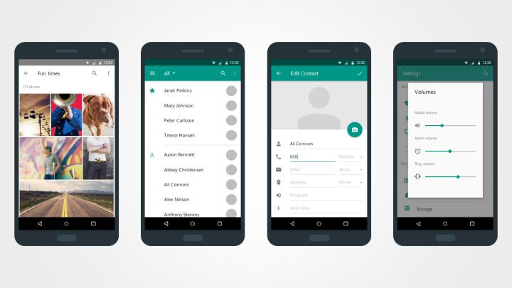

Select the best idea you generated in the first stage (Ideation). You will now create a design that is able to communicate your idea to other designers in a convincing way, showing that it would be the solution for the design challenge.
Challenge. Your job is to create a feature or modify a Facebook feature to maximize the number of answers for posts where people are searching for some kind of help.
Suggested time: 1 hour
Image of your final design, or Scan or photograph your sketches if you used physical mediums to produce them. Annotate your ideas, explaining the concepts so that others can read and understand.
In this stage you will probably use a design or prototyping software. We want to see how you go about designing a product and what you use to inform or inspire your design. Record your computer screen during this stage, we are interested in the web searches you do to inform or inspire your design and your design process.
Follow this Quicktime recording tutorial. If you are a Mac user, you already have Quicktime installed. If you are a Windows user, download and install Quicktime or use another screen recording app of your choice. Think out loud if you feel comfortable so we can better understand your thought process.
After uploading the materials click the button below to answer a short survey about the first stage.
Survey